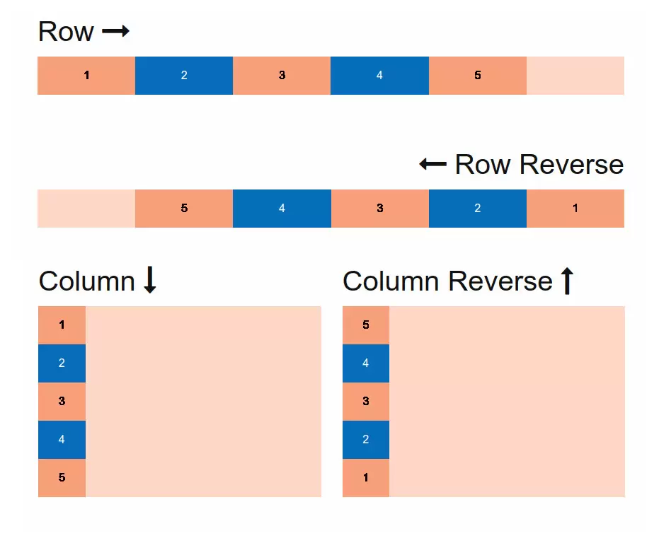

Rozdział czwarty
logika w JS
Operatory
delete - operator delete służy do usuwania właściwości z obiektu lub pustego miejsca w tablicy. Jeżeli żądana operacja jest poprawna (dopuszczalna), zwraca wartość true, w przeciwnym wypadku false.
const obj = {
a: 555
}
delete obj.a; //true
http://webmaster.helion.pl/starocie/jsplanet/7.html
https://kursjs.pl/kurs/super-podstawy/operatory.php
Operatory porównania
- > - lewa strona większa od prawej
- < - lewa strona mniejsza od prawej
- >= - lewa strona większa / równa od prawej
- <= - lewa strona mniejsza / równa od prawej
- == - obie strony równe, konwersja typów
- === - obie strony równe, bez konwersji typów
- != - obie strony różne, konwersja typów
- !== - obie strony różne, bez konwersji typów
| Truthy | Falsy |
|---|---|
| 'Tekst' - string | false |
| 14 - liczba | 0 - zero |
| -8 - liczba ujemna | '', "", `` - pusty string |
| { } - pusty obiekt | null |
| [ ] - pusta tablica | undefined |
| function( ){ } - pusta funkcja itd. | NaN - not a number |
| https://developer.mozilla.org/en-US/docs/Glossary/Truthy | https://developer.mozilla.org/en-US/docs/Glossary/Falsy |
Konwersja typów (niejawna), operator porównania
Lista zaskakujących przypadków
- "0" == false; //true -- OJEJ!
- false == 0; //true -- OJEJ!
- false == ""; //true -- OJEJ!
- false == []; //true -- OJEJ!
- "" == 0; //true -- OJEJ!
- "" == []; //true -- OJEJ!
- 0 == []; //true -- OJEJ!
Aby w przyszłości uniknąć problemów, stosując operator porównania, trzymaj się poniższych dwóch zasad.
- Jeżeli po dowolnej stronie operatora porównania może wystąpić wartość boolowska (true lub false), w żadnym wypadku NIGDY nie używaj operatora ==.
- Jeżeli po dowolnej stronie operatora porównania może wystąpić wartość [], "" lub 0, na poważnie rozważ zrezygnowanie ze stosowania operatora ==.
Pierwszeństwo operatorów
https://developer.mozilla.org/en-US/docs/Web/JavaScript/Reference/Operators/Operator_PrecedenceInstrukcja warunkowa
if (warunek){
blok kodu, gdy warunek jest prawdziwy (true), to kod się wykona
}
AND - wszystkie warunki muszą być true
if (warunek && warunek){
gdy wszystkie warunki są prawdziwe (true), to kod się wykona
}
OR - przynajmniej jeden warunek ma być true
if (warunek || warunek){
gdy przynajmniej jeden warunek jest prawdziwy (true), to kod się wykona
}
NOT - odwraca wartość wyrażenia logicznego
if (!(warunek)){
!false => true
!true => false
blok kodu, gdy warunek jest prawdziwy (true), to kod się wykona
}
else
if (warunek) {
wykonaj kod jeśli true
} else {
wykonaj kod jeśli false
}
else if
if (warunek) {
wykonaj kod jeśli true, jeśli false przejdź do następnego if
} else if (warunek) {
wykonaj kod jeśli true
}
Zapis skrócony
(zmienna1 > zmienna2) ? console.log('true') : console.log('false')
(warunek) ? kod wykonuje gdy warunek jest true : kod wykonuje gdy warunek jest false
Switch - przełącznik
const fruit = 'banana';
switch (fruit) {
case apple:
console.log(kod się nie wykona);
break;
case banana:
console.log(kod się wykona);
break;
default:
console.log(kod się wykona tylko wtedy, gdy żadne z powyższych warunków nie zostaną spełnione);
}
Troszkę logicznego śmiechu :)
https://www.destroyallsoftware.com/talks/watfunkcje
Funkcja w JS
- Deklarujemy nazwę funkcji (nie zawsze)
- W środku dokonujemy obliczeń / wykonujemy zadania
- Funkcja może przyjmować argumenty
- Funkcja zwraca zawsze coś (nawet jeśli nie mamy return - wtedy funkcja zwraca undefined)
Stworzenie funkcji
function calculate(x) {
x = x + 5;
console.log(x);
return x*8;
}
Wywołanie funkcji
calculate(5);
Po co funkcje?
- Deklarujemy kod, który się powtarza (DRY - don't repeat yourself)
- Zwiększamy czytelność kodu
- Łatwiejsze szukanie błędów
- Odpowiedzialność za wykonywanie zadania w jednym miejscu
(Fat) arrow functions - funkcja strzałkowa
const calculate = (x) => {
x = x + 5;
return x*8;
}
Skrócony zapis
const calculate = x => (x+5)*8
Funkcja strzałkowa
- Skraca zapis deklaracji funkcji
- Zwiększa czytelność (dyskusyjne)
- Nie tworzy nowego kontekstu this, nie ma dostępu do arguments i super
- Nie jest zamiennikiem "tradycyjnej" funkcji (ale w większości przypadków nie zobaczysz różnicy)
U mnie nie działa
Debugging - proces poszukiwania błędów i ich usuwania.
- Sprawdź czy plik jest zapisany.
- Sprawdź czy edytujesz właściwy plik.
- Sprawdź czy odświeżyłaś/eś przeglądarkę.
- Sprawdź czy nie masz błędów w edytorze / w devtoolsach.
- Zajrzyj w zakładkę network.
- Pogadaj z kolegą, koleżanką.
- Google it! Najlepiej odpowiedzi do roku wstecz.
- Stack Overflow.
- w3c != w3schools - Nie wchodzimy na w3schools.
Dobre źródła
Znaczniki - listy, tabele, definicje
- <ul>...</ul> - UnorderedList, lista nieuporządkowana
- <ol>...</ol> - Ordered List, lista uporządkowana
- <li>...</li> - List Item, element listy
- <dl>...</dl> - Description list, lista opisów
- <dt>...</dt> - Description term, np. tytuł zagadnienia
- <dd>...</dd> - Description details, opis szczegółowy
- <table>...</table> - tabela
- <tr>...</tr> - table row, wiersz tabeli
- <td>...</td> - table data (cell), dane tabeli
- <thead>...</thead> - nagłówek tabeli
- <th>...</th> - komórka w nagłówku tabeli
- <tbody>...</tbody> - "ciało" tabeli
- <caption>...</caption> - opis tabeli
- <tfoot>...</tfoot> - stopka tabeli
Tabele używamy do danych tabelarycznych. Tabelami nie budujemy layoutów.
Normalizacja, reset
Każda przeglądarka posiada swoje style domyślne. Normalizację i reset stosujemy, żeby te style były wszędzie takie same.
Przykładowy reset:
* {
margin:0;
padding: 0;
box-sizing: border box;
}
Plik normalizacji: https://necolas.github.io/normalize.css/
Normalizację z resetem możemy miksować.
Flexbox
Flexbox - system rozmieszczania i pozycjonowania elementów w dwóch osiach. W pionie i poziomie.
flex-direction: row, column, row-reverse, column-reverse - wybór osi rozmieszczania elementów
flex-wrap: nowrap, wrap, wrap-reverse - określa czy elementy w wierszu, kolumnie mają być w jednej lini czy zwijane
flex-flow: - skrócona własność, w której możemy określić flex-direction i flex-wrap
justify-content: flex-start, flex-end, center, space-between, space-around - ustawianie elementów wzdłuż osi flex-direction
align-content: stretch, flex-start, flex-end, center, space-between, space-around - ustawianie wierszy/kolumn wzdłuż osi przeciwnej do flex-direction
align-items: stretch, flex-start, flex-end, center, baseline - ustawianie elementów wzdłuż osi przeciwnej do flex-direction
align-self: stretch, flex-start, flex-end, center, baseline - ustawianie elementu wzdłóż osi przeciwnej do flex-direction
order: 0, liczba całkowita (-/+) - określa kolejność elementów
flex-grow: 0, liczba/proporcja - jak bardzo elementy mają rosnąć
flex-shrink: 1, liczba/proporcja - jak bardzo elementy mają maleć
flex-basis: none, rozmiar bazowy - ustawia rozmiar początkowy/główny elementów
flex: flex-grow, flex-shrink, flex-basis - zapis skrócony
Tło
background-image: url('sciezka-do-pliku') - ustawienie obrazku jako tło
background-position: pozycja y: top, bottom, center, yy%, yypx pozycja x: right, left, center, xx%, xxpx - pozycjonowanie tła
background-repeat: repeat, repeat-x, repeat-y, no-repeat, round, space - powtarzanie tła
background-attachment: scroll, fixed, local -
background-origin: border-box, padding-box, content-box - definiuje w którym miejscu tło powinno się zaczynać
background-clip: border-box, padding-box, content-box - w którym miejscu tło ma być cięte
background-color: wartość koloru - ustawia kolor tła
background-size: auto, cover, contain, <width> <height> - określa wielkość obrazka
Gradienty
Gradient – wypełnienie określonego obszaru płynnym przejściem tonalnym pomiędzy co najmniej dwoma kolorami.
https://cssgradient.io/gradient-backgrounds/